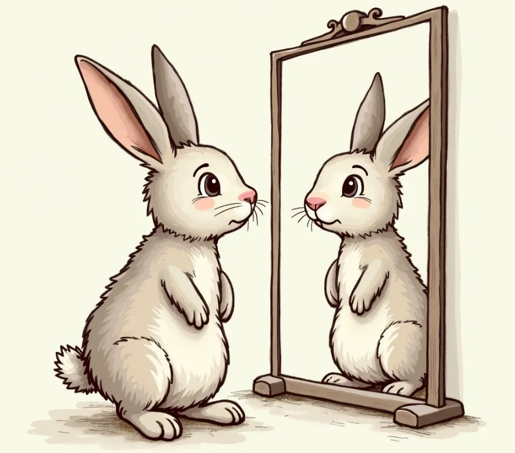

Kichekesho
Kichekesho ni mchezo au jambo lenye kufurahisha hadi kuwafanya watu wacheke. Kichekesho kinajumuisha hadithi za kuchekesha na utani kwa watazamaji.
Soma vichekesho hivi, kisha jibu maswali yanayofuata:
Kibo na Mawenzi
Mawenzi alikuwa analia. Akiwa njiani, alikutana na Kibo. Kibo akamuuliza, “Rafiki mbona unalia?” Mawenzi akajibu, “Nilikuwa nina shilingi elfu moja mbili, moja ya kununua unga na nyingine ya kununua mboga. Sasa nimezichanganya sijui ya unga ni ipi na ya mboga ni ipi.”
Sungura na kioo
Siku moja Sungura alienda dukani kununua kioo. Aliposimama mbele ya kioo akajiona na kila alichokifanya na taswira nayo ilifanya hivyo. Hatimaye Sungura alikasirika na kuiambia taswira, “Mbona kila ninachofanya unaniigiza?” Akaogopa na kuamua kukirudisha kioo dukani.

Fisi na kivuli
Fisi alizoea kutembea peke yake kila anakokwenda. Siku moja alitembea kukiwa na jua kali. Wakati akitembea, aliona kivuli kinamfuata. Alijaribu kukimbia na kivuli kilimfuata anakoelekea. Akikaa chini nacho kilikaa chini. Mwishowe alichoka sana, aliamua kukaa chini ya mti. Fisi alishangaa sana kuona kivuli hakipo tena. Aliporudi juani akaona tena kivuli kinamfuata, akaogopa na kukimbia tena kurudi kwenye mti.
Maswali
Jibu maswali yafuatayo kwa kuandika, kutumia kibodi au Breli.
Shughuli ya kumi
Chukua kioo na ujiangalie huku ukibadili mwonekano wa uso wako. Andaa kichekesho na uchekeshe mbele ya wenzako darasani.